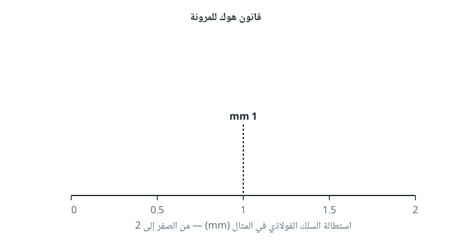

قانون هوك للمرونة
Hooke's law (elasticity)
قانون هوك يقول إن التشوه في جسم مرن يتناسب خطياً مع الإجهاد المطبق في نطاق المرونة: σ = E·ε. يُستعمل في حساب استطالة الأسلاك وتصميم النوابض وتقدير انحراف الكمرات، ويحدد الحد الذي يعود بعده الجسم إلى شكله الأصلي.
في نطاق المرونة، يتناسب الإجهاد σ مع الانفعال ε تناسباً خطياً: σ = E·ε، حيث E معامل يونغ. والانفعال بلا وحدة لأنه نسبة تغيّر الطول إلى الطول الأصلي، والإجهاد بوحدة الضغط. ومعنى القانون أن مضاعفة الحمل تضاعف الاستطالة، ما دام الجسم لم يتجاوز حد المرونة. مثال: سلك فولاذي طوله 2.00 m ومساحة مقطعه 1.00×10⁻⁶ m² ومعامل يونغ 200 GPa، يحمل وزناً 100 N: σ = 100/1.00×10⁻⁶ = 1.00×10⁸ Pa، وε = 1.00×10⁸/2.00×10¹¹ = 5.00×10⁻⁴، والاستطالة = 5.00×10⁻⁴ × 2.00 = 1.00 mm.
كيف تعمل الظاهرة؟
في المادة الصلبة، ترتبط الذرات بروابط كهرومغناطيسية حول مواضع توازن. وحين يُطبَّق إجهاد، تنزاح الذرات عن مواضعها، فتقاوم الروابط هذا الانزياح بقوة تعيدها. ولمّا كان شكل منحنى طاقة الرابطة قرب القاع قريباً من قطع مكافئ، كانت القوة الاستعادة متناسبة خطياً مع الانزياح، وهذا أصل الخطية في قانون هوك. وعند تجاوز حد معيّن تبدأ الروابط بالانفصال أو الانزلاق، فينحني المنحنى ويبقى التشوه الدائم.
العلاقة بالأرقام
σ = E·ε، وε = ΔL/L₀، وσ = F/A. مثال: F = 100 N، A = 1.00×10⁻⁶ m²، E = 2.00×10¹¹ Pa، L₀ = 2.00 m → σ = 1.00×10⁸ Pa، ε = 5.00×10⁻⁴، ΔL = 1.00×10⁻³ m = 1.00 mm. وصلابة السلك k = E·A/L₀ = 2.00×10¹¹ × 1.00×10⁻⁶/2.00 = 1.00×10⁵ N/m، فتكون الاستطالة ΔL = F/k = 100/1.00×10⁵ = 1.00 mm، وهو ما يطابق الحساب السابق.
مفاهيم متقاربة
يُفرَّق بين معامل يونغ ومعامل القص: الأول يقيس مقاومة الاستطالة، والثاني مقاومة الانزلاق الجانبي، ويختلفان في المادة نفسها. ويُفرَّق بين الإجهاد الهندسي والحقيقي: الهندسي يقسم على المساحة الأصلية، والحقيقي على المساحة اللحظية. ويُفرَّق بين المرونة واللدونة: المرن يعود، واللدن يبقى مشوهاً. وأخيراً يُفرَّق بين قانون هوك للمواد وقانون هوك للنوابض: الأول بصيغة إجهاد-انفعال، والثاني بصيغة قوة-إزاحة، وهما متكافئان للسلك المنتظم.
حدود التطبيق
القانون صالح فقط في نطاق المرونة، وينحرف عند تجاوز حد التناسب. ولا يصف المواد المطاطية عند التشوهات الكبيرة، حيث تصبح العلاقة غير خطية وتظهر ظاهرة التصلب الانفعالي. ولا يُستعمل للمواد اللدنة كالفولاذ الطري بعد الخضوع، ولا للمواد الهشة كالزجاج قرب الكسر. كذلك لا يصف الزحف عند درجات الحرارة العالية، حيث يتشوه الجسم مع الزمن تحت إجهاد ثابت.

| الكمية | القيمة | المصدر |
|---|---|---|
| استطالة السلك الفولاذي في المثال | 1.00 mm | [2] |
| الطاقة المخزنة في نابض 250 N/m عند ضغط 0.0800 m | 0.800 J | [2] |
المصادر
- 1 CODATA Value: molar gas constant — NIST — CODATA 2022 recommended values (2024). physics.nist.gov/cgi-bin/cuu/Value?r · اطُّلع عليه 2026-11-21
- 2 College Physics 2e — 16.1 Hooke's Law: Stress and Strain Revisited — OpenStax, Rice University (2026). openstax.org/books/college-physics-2e/pages/16-1-hookes-law-stress-and-strain-revisited · اطُّلع عليه 2026-11-21
استشهد بهذا المصطلح
الصيغتان مبنيتان من بيانات الصفحة نفسها: العنوان والتاريخ ورابط النسخة المنشورة.
قانون هوك للمرونة — Hooke's law (elasticity). (2026). ديوان المعرفة — انفراد. https://infiradev.com/diwan/terms/term-hookes-law-elastic.html
@misc{term-hookes-law-elastic2026,
title = {قانون هوك للمرونة},
titleaddon = {Hooke's law (elasticity)},
howpublished = {{ديوان المعرفة — انفراد} — مرجع علمي عربي},
year = {2026},
url = {https://infiradev.com/diwan/terms/term-hookes-law-elastic.html},
urldate = {2026-11-26},
note = {مراجعة علمية: hermes (مراجعة معتمدة 2026-11-26)}
}
راجعه: hermes (مراجعة معتمدة 2026-11-26) · 2026-11-26 · آخر تحديث 2026-11-21